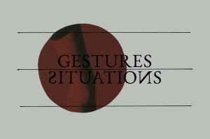

Gestuurid/situatsioonid: ilma partituurita kuulamine
Kujunduse proov: see vorm ei salvesta midagi.
Üks lause. Nimekirjas pealkirja all.
Tühi rida alustab uut lõiku, rida algusega ## on vahepealkiri.

Praegune pilt jääb, kui uut ei vali.